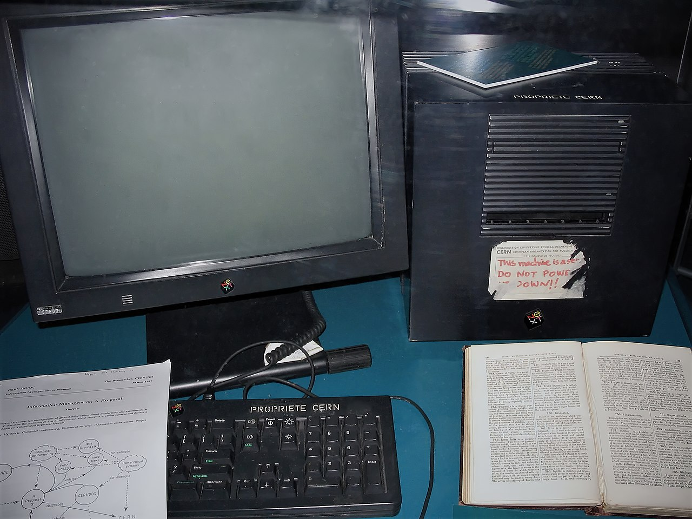

Inventions

En 1989, Berners-Lee soumet au CERN un mémo intitulé Information Management: A Proposal. L'idée centrale est de relier des documents entre eux par des liens hypertextes, accessibles via un réseau informatique.
Le système repose sur trois piliers fondamentaux :
Le 6 août 1991, il met en ligne le premier site web de l'histoire à l'adresse info.cern.ch. Berners-Lee ne dépose aucun brevet : il offre son invention au monde entier, gratuitement.
Pour faire fonctionner le Web, Berners-Lee invente trois technologies fondamentales, toujours utilisées aujourd'hui :
| Technologie | Nom complet | Rôle |
|---|---|---|
| HTML | HyperText Markup Language | Structurer les pages web |
| HTTP | HyperText Transfer Protocol | Communication client-serveur |
| URL | Uniform Resource Locator | Adresse unique d'une ressource |
Le HTML est un langage de balisage qui utilise des balises pour structurer le contenu d'une page web. Voici les balises les plus courantes :
h1 à h6 : titres de différents
niveauxp : paragraphes de textea : liens hypertextesimg : imagestable, tr, td :
tableaux de donnéesul, ol, li :
listesÀ savoir : Chaque fois que vous tapez une adresse dans votre navigateur ou cliquez sur un lien, vous utilisez directement les inventions de Tim Berners-Lee.
En 1994, Berners-Lee fonde le World Wide Web Consortium (W3C) au MIT. Le W3C est l'organisation internationale chargée de définir les standards du Web.
Ses missions principales :
En 2018, face à la concentration des données personnelles entre les mains de quelques géants (Google, Facebook, Amazon), Berners-Lee lance SOLID (Social Linked Data).
L'idée : chaque utilisateur possède un Pod (Personal Online Datastore) où ses données lui appartiennent vraiment. Les applications accèdent aux données avec permission, mais ne les possèdent pas.
SOLID vise à re-décentraliser le Web, à rebours de la tendance des années 2010.
Projet réalisé par :
L1 MIPSI : Parcours Informatique 2025/2026